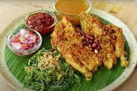

Local Food
Discover some iconic dishes from my hometown. These reflect Bali's rich flavors and traditions.
| Name | Short Description | Image |
|---|---|---|
| Ayam Betutu | Chicken or duck marinated with Balinese spices (“base genep”), wrapped in banana leaves, and slowly roasted. It’s spicy, savory, and very aromatic. |  |
| Sate Lilit | Minced meat or fish mixed with grated coconut and spices, wrapped around lemongrass sticks, then grilled. A signature Balinese flavor found in many small eateries. |  |
| Lawar | A mix of vegetables, grated coconut, and Balinese spices. Sometimes includes meat, often served as a side dish with Balinese rice sets. | |
| Nasi Campur Bali | Warm white rice served with various Balinese dishes such as shredded chicken, lawar, sate lilit, and sambal matah. A complete and flavorful combo. |  |
| Nasi Jinggo | Small portions (about a fist size) with simple side dishes like shredded chicken, fried noodles, and fried tempeh. |